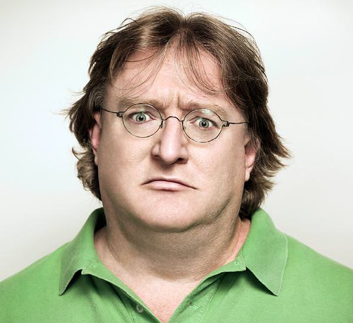

Gabe Logan « Gaben » Newell, né le 3 novembre 1962 à Seattle, Washington, est un informaticien, entrepreneur et milliardaire américain. Il est principalement connu pour être le cofondateur et président du studio de développement, d'édition et de distribution de jeux vidéo Valve Corporation. Il est considéré comme étant l'image de Valve auprès du public et comme ayant joué un rôle majeur dans le succès de Half-Life. Il s'est occupé également, pendant plusieurs mois, de la conception de la plateforme de distribution de contenu en ligne Steam.
